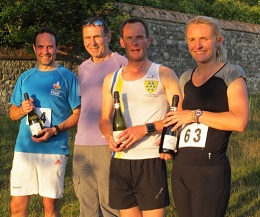
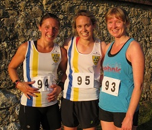

Attached are the results of the Knole House Relay of 30 June which was won by Team 6 - Clair Thornton, Hugh Brennan and Keith Brown.

In second place was the all girl team of Kim Pegg, Nicki Thompson and Kate Wills who only just managed to hold off the fast finishing David Ives by 2 seconds.

As usual we also produce a "fastest lap" ranking which was headed by David Ives in 4.36, and a "consistency" ranking based on the percentage variation in lap times from the first lap which was headed by Marco Mion.
Thanks to Jim and Lesley Knight for their help with the timing and results.
John Denyer